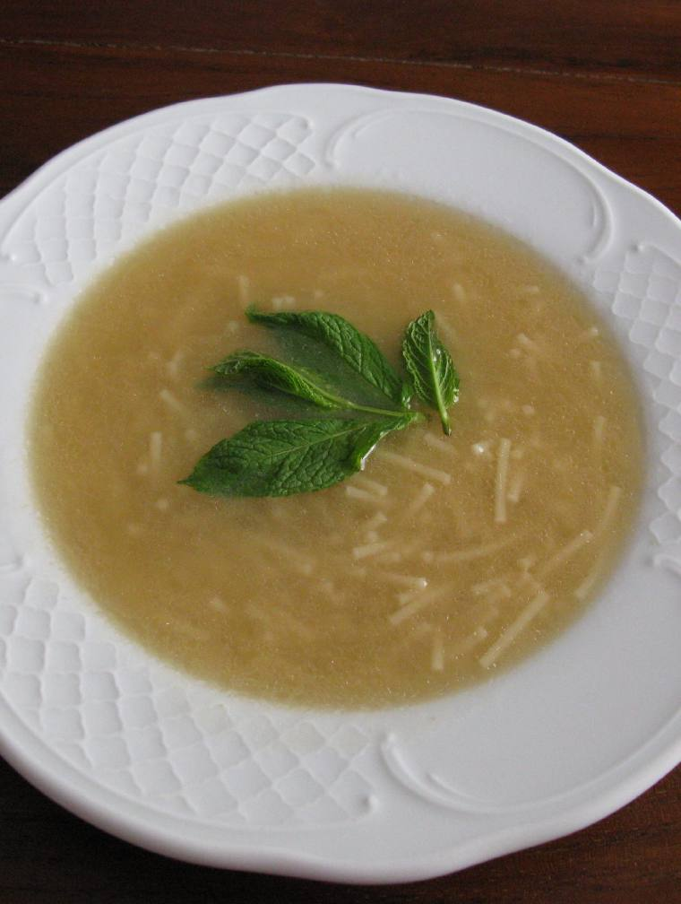

Cuisine espagnole

Cuisine espagnole
Puchero andaluz
Le pot-au-feu andalou, et sa pringá
Préparation : 30 min
Repos : 12 h
Cuisson : 2 h 15
Ingrédients (pour 6 personnes)
- 500 g de pois chiches secs
- 250 g de poulet
- 200 g de porc
- 200 g de lard frais
- 200 g de morcilla
- un morceau de lard rance (tocino añejo)
- 250 g de haricots verts plats
- 250 g de potiron
- 250 g de pommes de terre
- eau, sel
Quantités adaptées. Les temps de cuisson ne sont pas recalculés.
- La veille, faire tremper les pois chiches.
- Couvrir largement d’eau tiède pois chiches, poulet, porc et lards, porter à ébullition, écumer.
- Mijoter 1 h 30 à 2 heures, jusqu’à ce que les pois chiches soient tendres.
- Ajouter morcilla, haricots, pommes de terre et potiron, cuire 15 à 20 minutes, saler.
- Servir le bouillon d’abord, puis les légumes et la pringá : viandes et lards écrasés sur du pain.
D’après Spain.info, office espagnol du tourisme. Traduit et reformulé, eau, portions et durée de cuisson précisées.